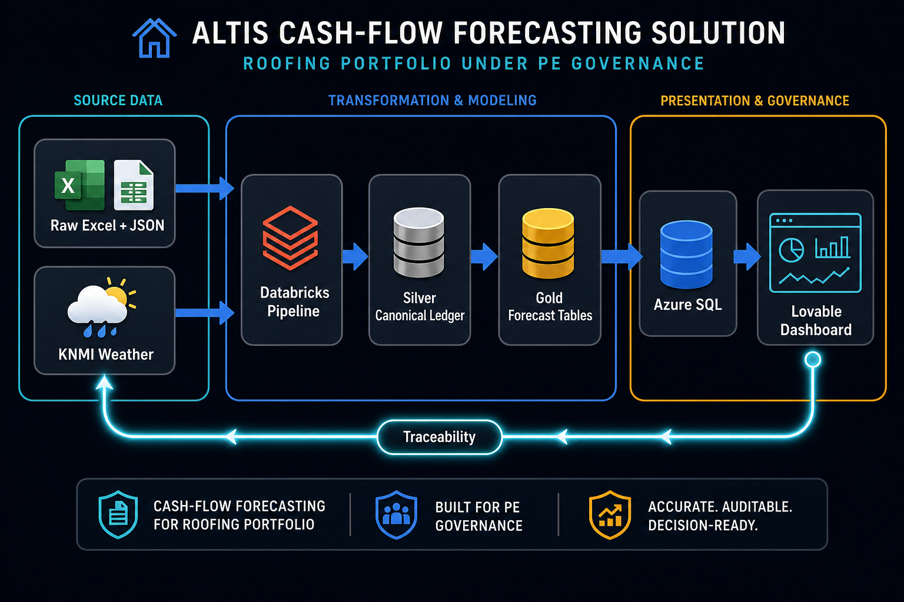

Built
Data foundation
~31,734 deduplicated sales-side bookings from Yuki, Exact, and Dataset 2 into one canonical ledger. Andijk has aggregate KPI history only.
Altis Hackathon · Documentation Hub
This documentation set summarizes what the team built: a Databricks data pipeline that reconciles accounting exports, models 13-week cash flow, adds weather-driven schedule risk, exports gold tables to Azure SQL, and feeds a Lovable dashboard prototype.

Built
~31,734 deduplicated sales-side bookings from Yuki, Exact, and Dataset 2 into one canonical ledger. Andijk has aggregate KPI history only.
Built
13-week direct-method forecast by portco, driver, scenario, and confidence label. No ML: every number maps to observed bookings or explicit assumptions.
Built
KNMI daily weather becomes roofing work-day ratios, then adjusts expected revenue and implied DSO delay for wet/base/dry scenarios.
git clone <repo-url>.When you provide the repo URL, clone path, or downloaded source, this doc set can be extended with frontend architecture and dashboard component mapping.